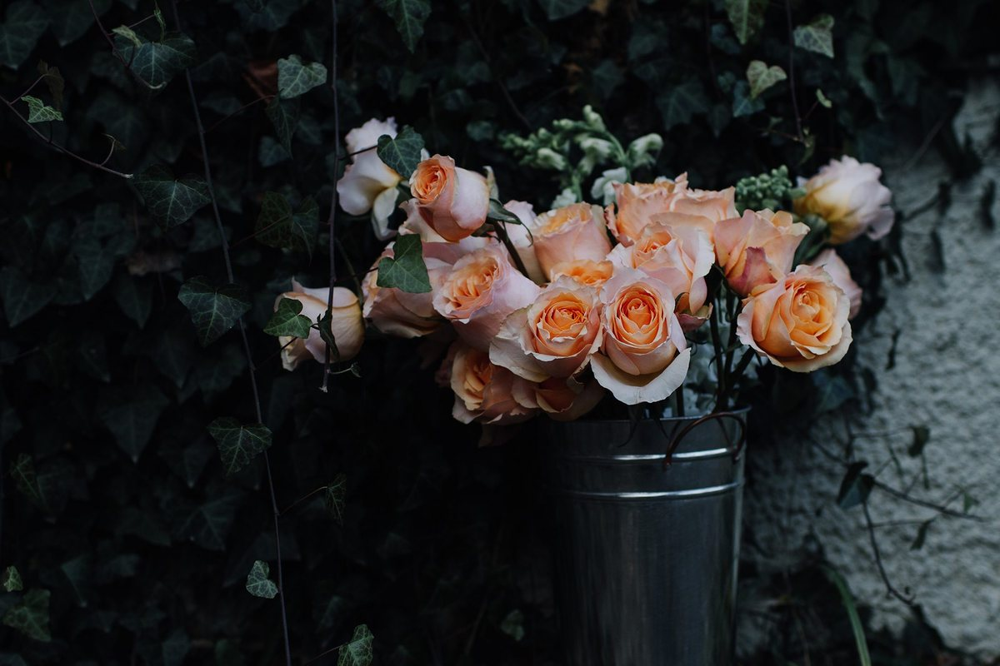
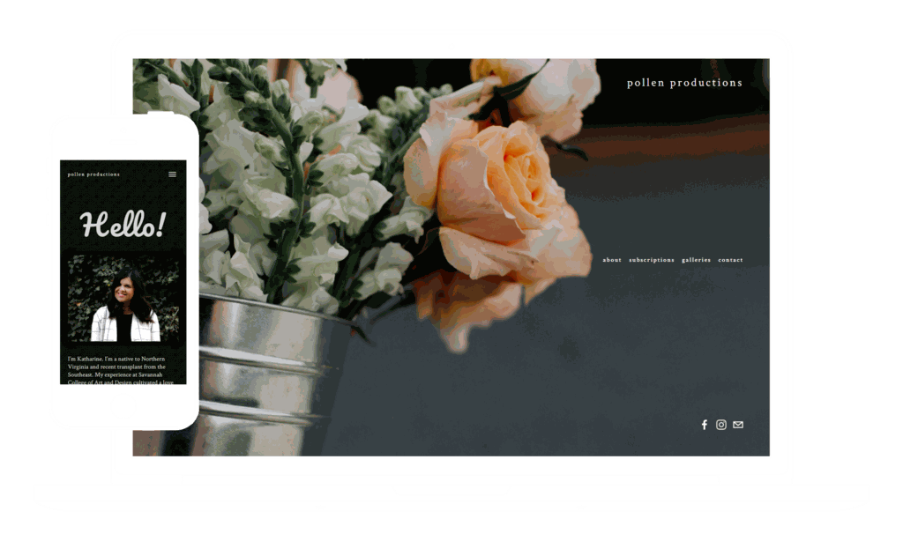
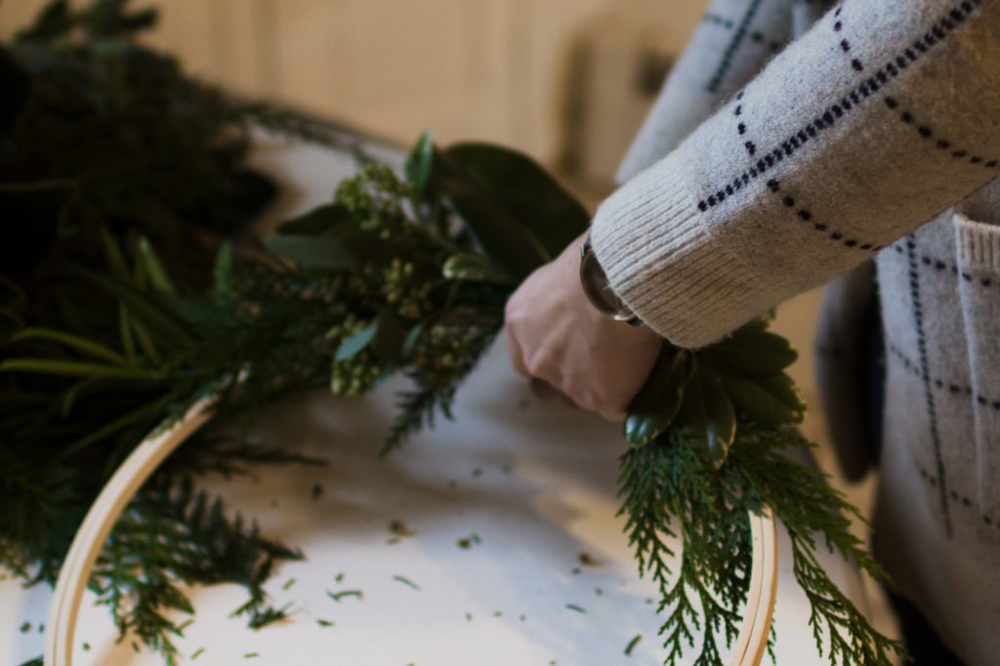
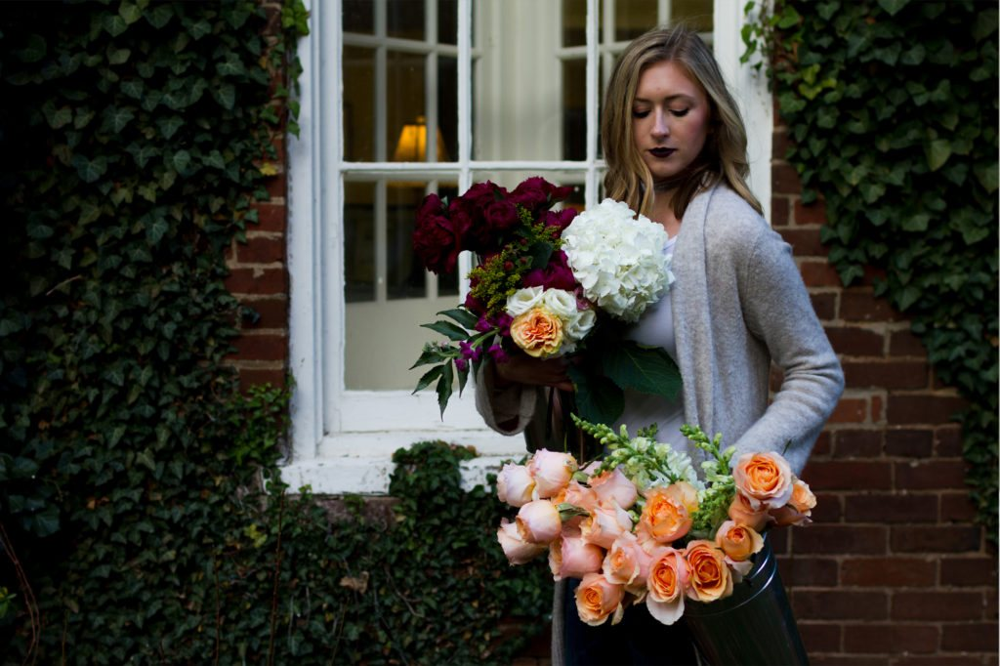
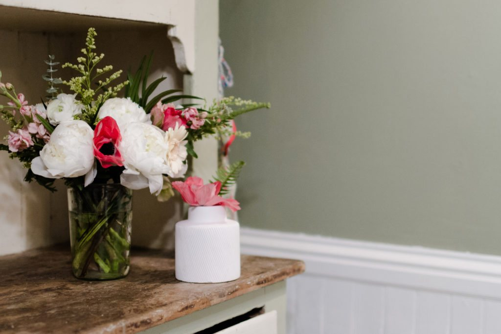

Pollen Productions
Pollen Productions, a floral designer, wanted to sell monthly bouquet subscriptions online. I shaped the brand's look, directed a product photo shoot, and designed the Squarespace site and store, with Stripe handling payments. Every page keeps the subscription a few clicks away.


Learning the style from the work
Interviews set the direction: light or dark, modern or classic, playful or serious. But the most useful insight came from watching the owner build bouquets while we prepared the shoot. Her arrangements always used deep, lush colors, so I narrowed the site's palette after every meeting until it matched.



The new site launched with monthly bouquet subscriptions available online. Fill in: add the revenue result only if the client told you so